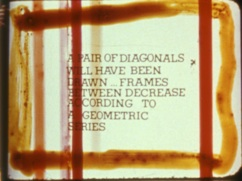

Alternative Projections: A Symposium and Film Festival


Saturday November 13, 2010 9:30am - 12:00pm
Shopper's Market: Exhibition, Distribution and Canonization
Moderated by David James
Adam Hyman: Censorship and Liberation: The Exhibition of the Avant-Garde in 1960s Los Angeles
Alison Kozberg: Canonization in the 1970s: Curatorship at Los Angeles' Theatre Vanguard
Ken Eisenstein: John Vicario's 'Shopper's Market' vs. ‘The Cool School’

Saturday November 13, 2010 1:00pm - 3:30pm
Subcultures Scene and Seen
Moderated by George Baker
Erika Suderburg: Deviant Bicentennial Redux 1976
Marc Siegel: Taylor Mead, a Faggot in Venice Beach in 1961
Mike Olenick: The Inauguration of Renate Druks

Saturday November 13, 2010 4:00pm - 6:30pm
Blurred Boundaries: Outsider/Insider Filmmaking and Group Identities
Moderated by Mark Toscano
Jesse Lerner: ASCO and Muralism
Ross Lipman: Kent Mackenzie's 'The Exiles':
Re-inventing the Real of Cinema

Sunday November 14, 2010 11:30am - 2:00pm

High Concepts: Cross Sections of Art and Film
Moderated by Russell Ferguson
Carlos Kase: Storm, Stress, and Structure: The Films of Roberta Friedman and Grahame Weinbren
Katherine Kerrigan: Urban Landscape and Psychogeography: Jon Jost’s Los Angeles Films
Grahame Weinbren: Pat O'Neill in Monument Valley
Liz Kotz: Paul McCarthy, Conceptualist media of the late 1960's

About the Moderators:
George Baker is Associate Professor of Art History at UCLA, where he has taught modern and contemporary art and theory since 2003. A New York and Paris-based critic for Artforum magazine throughout the 1990s, he also works as an editor of the journal October and its publishing imprint October Books. He regularly offers courses on all aspects of modernism and the historical avant-garde, on the history of photography in the 19th- and 20th-centuries, and on specialized topics in post-war and contemporary art history. Baker received his Ph.D. from Columbia University, and is a graduate of the art history program at Yale University and the Independent Study Program of the Whitney Museum of American Art. He has received, amongst others, an Andrew Mellon Fellowship in the Humanities, CASVA and Whiting Foundation fellowships, and a postdoctoral fellowship from the Getty Research Institute. Professor Baker is the author, most recently, of The Artwork Caught by the Tail: Francis Picabia and Dada in Paris (MIT Press, 2007), and several other books including James Coleman: Drei Filmarbeiten (Sprengel Museum, 2002), and Gerard Byrne: Books, Magazines, and Newspapers (Lukas & Sternberg, 2003). He has published essays on a variety of postmodern and contemporary artists including Robert Smithson, Robert Whitman, Anthony McCall, Louise Lawler, Andrea Fraser, Christian Philipp Müller, Tom Burr, Rachel Harrison, and Knut Åsdam. In 2007 and 2008, his essay on the artist Paul Chan was published in a catalog that accompanied Chan’s major exhibition of the project The 7 Lights at the Serpentine Gallery in London and the New Museum in New York. Baker subsequently published an interview with Chan for the recent anti-war issue of October. Currently, he is working on disparate projects including a revisionist study of Picasso’s modernism and a shorter book on the work of four women artists--Zoe Leonard, Tacita Dean, Moyra Davey and Sharon Lockhart--to be entitled Lateness and Longing: On the Afterlife of Photography. The latter is part of a larger project that Baker has termed “photography’s expanded field,” detailing the fate of photography and film works in contemporary cultural production.
Russell Ferguson is the Chair of the Department of Art at the University of California, Los Angeles. He has also served as Deputy Director for Exhibitions and Programs, and Chief Curator, at the Hammer Museum, Los Angeles, and he remains an adjunct curator at the Hammer. From 1991 to 2001, he was at the Museum of Contemporary Art, Los Angeles, first as Editor, then as Associate Curator. While there, he edited Art and Film since 1945: Hall of Mirrors. He has organized an impressive number of exhibitions throughout his career, including The Undiscovered Country (2004) at the Hammer, a survey of various approaches to representation in painting, and Open City: Street Photographs Since 1950 (2001) for The Museum of Modern Art at Oxford. Ferguson is also the editor of two collections of critical writing: Discourses: Conversations in Postmodern Art and Culture, and Out There: Marginalization and Contemporary Cultures, both published by the MIT Press. He has written about the work of many contemporary artists, including Thomas Eggerer, Olafur Eliasson, Tony Feher, Rodney Graham, Nikki Lee, Damian Ortega, Laura Owens, and Gillian Wearing.
David James teaches in the School of Cinema-Television at USC. He edited Sons and Daughters of Los: Culture and Community in Los Angeles. He is the author or editor of several books on independent American film. His most recently published is the acclaimed The Most Typical Avant-Garde: History and Geography of Minor Cinemas in Los Angeles.
Mark Toscano previously acted as Assistant Director of avant-garde distributor Canyon Cinema before starting work as a film preservationist at the Academy Film Archive in Los Angeles in 2003. He specializes in the preservation of experimental cinema, and has worked on films by Robert Nelson, Morgan Fisher, Roberta Friedman, Standish Lawder, the Whitney brothers, Pat O’Neill, Kathy Rose, Adam Beckett, Satyajit Ray, Ray Harryhausen, and many others. His largest ongoing project is the restoration of the complete film output of renowned experimental filmmaker Stan Brakhage.
Schedule | Screenings | Presentations | Special Events & Exhibits
PRESENTations
Within each panel block, click on the presentation to read the full abstract and presenter bios
Nun and Deviant (1976) by Candace Compton and Nancy Angelo.
Image courtesy of Video Data Bank
Future Perfect (1980) by Roberta Friedman and Grahame Weinbren
Image courtesy of the Academy Film Archive
Asco's "Instant Mural" (1974)
Image courtesy of Jesse Lerner
Image of the Coronet Theatre, ca. 1950s
Courtesy of Tim Lanza
Los Angeles Filmforum | Site Design by Stephanie Sapienza | Contact